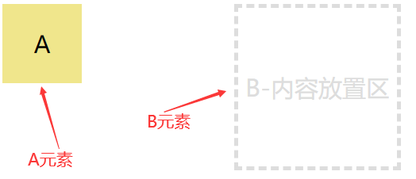

一、鼠标滚轮事件
鼠标滚轮事件存在兼容性问题，不同浏览器对应的事件名不一样。
事件名 事件对象属性（判断滚动方向） 支持浏览器 mousewheel（非标准） e.wheelDelta：正值（120） ↑;负值（-120）↓Webkit 和 Edge 等各大浏览器，但 Firefox 不支持 DOMMouseScroll（非标准） e.detail：正值（3）↓;负值（-3）↑ 低版本 firefox，同时该事件需要通过 addEventListener方式绑定事件监听wheel（标准） e.deltaY：正值 ↓;负值 ↑各个厂商的高版本浏览器都支持
- mousewheel 事件
- 早期低版本的
webkit和Edge支持 - 通过
e.wheelDelta的值来判断鼠标滚动的方向，值为 120 向上，值为-120 向下
- 早期低版本的
box.addEventListener("wheel", eventFn, false);
function eventFn(e) {
// 负值 向下滚 正值 向上滚
console.log(e.wheelDelta);
}
- DOMMouseScroll 事件
- 低版本的
Firefox支持 - 通过
e.detail的值来判断鼠标滚动方向，值为 3，向下滚，值为 -3 向上滚
- 低版本的
box.addEventListener("DOMMouseScroll", eventFn, false);
function eventFn(e) {
// 正值 3 向下滚 负值 -3 向上滚
console.log(e.detail);
}
- wheel 事件
- 为了统一滚轮事件的标准，各大浏览器的高版本都支持这个事件
- 通过
e.deltaY的值来判断鼠标滚动方向，正值向下，负值向上。
var box = document.querySelector(".box");
box.addEventListener("wheel", eventFn, false);
function eventFn(e) {
// 正值 向下滚 负值 向上滚
console.log(e.deltaY);
}
- 兼容型处理
- 以下代码封装成
wheel.js文件，供后期使用
- 以下代码封装成
- 获取浏览器当前支持的版本的鼠标滚轮事件名
var box = document.querySelector(".box");
// 获取浏览器当前支持的版本的鼠标滚轮事件名
console.log("onwheel" in box); //true
var support =
"onwheel" in document.createElement("div")
? "wheel" // 各个厂商的高版本浏览器都支持"wheel"
: document.onmousewheel !== undefined
? "mousewheel" // Webkit 和 IE 一定支持"mousewheel"
: "DOMMouseScroll"; // 低版本 firefox
"onwheel" in box：用in检查HTMLElement原型上是否有onwheel这个方法，如果有就用wheel事件- 但因为要封装，所以自己创建一个元素，并查看它的原型上是否有这个方法
document.onmousewheel !== undefined用来检查是否支持mousewheel事件，如果不支持，就会使用DOMMouseScroll
- 处理事件对象的属性值
function callback(e) {
var e = e || window.event;
e.preventDefault(); // 阻止默认行为
// 处理低版本火狐,如果有detail值，就给e添加deltaY属性,并统一正负
e.detail && (e.deltaY = e.detail * 40);
// 处理低版本 ie 和 Edge等浏览器,如果有wheelDelta值，就给e添加deltaY属性,并统一正负
e.wheelDelta && (e.deltaY = -e.wheelDelta);
//如果前两个版本都没有，就使用e.deltaY
if (e.deltaY > 0) {
//向下滚
//要处理的业务逻辑写在这里
} else {
//向上滚
//要处理的业务逻辑写在这里
}
>
}
优化
- 将事件处理函数抽离，供用户自己设置
- 事件处理函数中的
this和arguments丢失问题
封装
>/**
> * addWheelListener 兼容不同版板的鼠标滚轮事件
> * element 绑定滚轮事件的元素
> * eventFn 事件处理函数
> * useCapture 在捕获还是冒泡阶段执行
> */
window.addWheelListener = function (element, eventFn, useCapture = false) {
// 获取浏览器当前支持的版本的鼠标滚轮事件名
var support =
"onwheel" in document.createElement("div")
? "wheel" // 各个厂商的高版本浏览器都支持"wheel"
: document.onmousewheel !== undefined
? "mousewheel" // Webkit 和 IE 一定支持"mousewheel"
: "DOMMouseScroll"; // 低版本 firefox
>
// 添加鼠标事件
element.addEventListener(support, callback, useCapture);
>
// 兼容写法的事件方法
function callback(e) {
var e = e || window.event;
e.preventDefault(); // 阻止默认行为
// 处理低版本火狐
e.detail && (e.deltaY = e.detail * 40);
// 处理低版本 ie 和 Edge等浏览器
e.wheelDelta && (e.deltaY = -e.wheelDelta);
>
// 滚动事件要处理的事情，通过e.deltaY来判断滚动的方向，正向下，负向上
eventFn.apply(this, arguments);//传入this和arguments
}
};
//调用函数
function fn(e) {
console.log(this);
console.log(e);
//真正的事件处理函数
if (e.deltaY > 0) {
//向下滚
//要处理的业务逻辑写在这里
console.log("向下");
} else {
//向上滚
//要处理的业务逻辑写在这里
console.log("向上");
}
}
addWheelListener(box, fn, false);
- 案例 1：滚动实现元素高度变化
><style>
html,
body {
margin: 0;
padding: 0;
}
.box {
width: 100px;
height: 200px;
background-color: khaki;
margin: 50px;
}
></style>
><script src="./wheel.js"></script>
><div class="box"></div>
><script>
var box = document.querySelector(".box");
>
function fn(e) {
var speed = 10;
if (e.deltaY > 0) {
//向下滚
box.style.height = this.offsetHeight + speed + "px";
} else {
//向上滚
box.style.height = this.offsetHeight - speed + "px";
}
}
>
addWheelListener(box, fn);
></script>
- 案例2：全屏垂直滚动轮播
涉及知识点
- 鼠标滚轮事件
transitionend事件- 节流操作
- 事件委托
window.resize事件
- CSS布局代码
><style>
html,
body {
margin: 0;
padding: 0;
height: 100%;
}
.wrap {
width: 100%;
height: 500%;
transform: translate3d(0, 0, 0);
transition: transform 1s ease;
}
.wrap .slide {
display: flex; /*使文字居中*/
align-items: center;
justify-content: center;
color: #fff;
font-size: 60px;
height: 20%;
}
.wrap .slide:nth-child(1) {
background-color: khaki;
}
.wrap .slide:nth-child(2) {
background-color: skyblue;
}
.wrap .slide:nth-child(3) {
background-color: tomato;
}
.wrap .slide:nth-child(4) {
background-color: rgb(154, 236, 197);
}
.wrap .slide:nth-child(5) {
background-color: rgb(174, 139, 223);
}
/* 分页器 */
.pagination {
position: fixed; /*固定在一个位置*/
right: 20px;
top: 50%;
transform: translateY(-50%);
width: 11px;
height: 100px;
display: flex; /*使span居中*/
flex-direction: column; /*改变方向*/
justify-content: space-between; /*使span两端对齐*/
}
.pagination span {
width: 100%;
height: 11px;
background-color: #fff;
border-radius: 50%;
cursor: pointer;
}
.pagination span.active {
background-color: orange;
box-shadow: 0 0 2px 3px orange;
}
></style>
>
><div class="wrap">
> <div class="slide">第一屏</div>
> <div class="slide">第二屏</div>
> <div class="slide">第三屏</div>
> <div class="slide">第四屏</div>
> <div class="slide">第五屏</div>
></div>
><div class="pagination">
> <span class="active"></span>
> <span></span>
> <span></span>
> <span></span>
> <span></span>
></div>
- 处理分页器切换效果
><script>
var spans = document.querySelectorAll(".pagination span");
var pagination = document.querySelector(".pagination");
var viewHeight = document.documentElement.clientHeight;
var wrap = document.querySelector(".wrap");
var currentIndex = 0;
var prevSpan = 0;
//给span加下标
var len = spans.length;
for (var i = 0; i < len; i++) {
spans[i].index = i;
}
//利用事件委托，切换slide和span
pagination.onclick = function (e) {
var target = e.target;
var tagName = target.tagName.toLowerCase();
if (tagName !== "span") return;
//给span加样式
spans[prevSpan].classList.remove("active");
currentIndex = target.index;
spans[currentIndex].classList.add("active");
prevSpan = currentIndex;
//改变slide
var translateY = -currentIndex * viewHeight;
wrap.style.transform = "translate3d(0," + translateY + "px, 0)";
};
></script>
- 滚轮操作切换效果
><script src="./wheel.js"></script>
// 滚轮切换
function fn(e) {
if (e.deltaY > 0) {
currentIndex++;
if (currentIndex === len) {
currentIndex = len - 1;
return;
}
//给span加样式
spans[prevSpan].classList.remove("active");
spans[currentIndex].classList.add("active");
prevSpan = currentIndex;
//改变slide
var translateY = -currentIndex * viewHeight;
wrap.style.transform = "translate3d(0," + translateY + "px, 0)";
} else {
currentIndex--;
if (currentIndex < 0) {
currentIndex = 0;
return;
}
//给span加样式
spans[prevSpan].classList.remove("active");
spans[currentIndex].classList.add("active");
prevSpan = currentIndex;
//改变slide
var translateY = -currentIndex * viewHeight;
wrap.style.transform = "translate3d(0," + translateY + "px, 0)";
}
}
addWheelListener(wrap, fn);
- 节流操作
- 方法1：节流函数
- 引入节流函数，因为是低频，所以注意要把事件处理函数放定时器外面
- 缺点：滚动事件的节流和分页器的节流相互独立，虽然在限时时间内不能滚动，但如果同时点分页器，就会受到影响
- 方法2：
addtransitionend事件- 设置一把锁，当
lock=true时，不能触发span的点击事件和滚轮事件- 当动画完结时，开锁
- 注意还有几个需要开锁的地方
- 当滚动到最后一个/第一个后，再次滚动，不会触发动画，因此就不会开锁
- 当连续点击同一个分页器时，也不会触发动画
这个方法使滚轮事件和分页器相互影响，在其中一个事件的动画完成之前，另一个事件是触发不了的
- 优化
- 把公用的代码抽离出来
- 当浏览器窗口大小改变时，
viewHeight、translateY也要做相应改变- 使用
resize
- 使用
function to(index) {
//给span加样式
currentIndex = index;
spans[prevSpan].classList.remove("active");
spans[currentIndex].classList.add("active");
prevSpan = currentIndex;
//改变slide
var translateY = -currentIndex * viewHeight;
wrap.style.transform = "translate3d(0," + translateY + "px, 0)";
}
window.addEventListener("resize", function () {
// 同时还要重新计算，wrap 的translateY的值
viewHeight = document.documentElement.clientHeight;
var translateY = -(currentindex * viewHeight);
wrap.style.transform = "translate3d(0, " + translateY + "px, 0)";
});
二、鼠标按键
- 禁止右键菜单
contextmenu事件，会在鼠标点击右键或者按下键盘上的菜单键时被触发，用于显示上下文菜单- 如果我们希望在按下右键时，不要显示上下文菜单，我们可以在
contextmenu事件中，阻止默认行为。
// 在页面任意位置按下右键，都不会显示上下文菜单
document.addEventListener("contextmenu", function (e) {
e.preventDefault();
});
>
var box = document.querySelector(".box");
// 只在当前元素上按下时，不显示上下文菜单
box.addEventListener("contextmenu", function (e) {
e.preventDefault();
});
- 禁止选中元素
selectstart事件，在用户开始一个新的选择时候触发如果不想用户选择内容，可以在事件中阻止默认行为
我是一堆测试文字
><script>
document.onselectstart = function (e) {
e.preventDefault();
};
></script>
- 判断按下的鼠标键
MouseEvent.button(e.button)是只读属性，它返回一个值，代表用户按下并触发了事件的鼠标按键。- 常用于在
onmouseup事件中，判断用户按下的是鼠标左键 、中键、右键中的那个键属性值 说明 0 主按键，通常指鼠标左键或默认值 1 辅助按键，通常指鼠标滚轮中键 2 次按键，通常指鼠标右键
><style>
.box {
width: 200px;
height: 200px;
background-color: khaki;
}
></style>
>
><div class="box"></div>
><script>
var box = document.querySelector(".box");
box.onmouseup = function (e) {
console.log(e.button); // 0 左键 1中键 2右键
};
></script>
- 案例-自定义右键菜单
- 禁止出现原本的右键菜单
- 自定义新的菜单栏
- 鼠标点哪菜单就出现在哪：将菜单栏的left、top与鼠标事件绑定
- 点击其他位置取消菜单栏：设置一个点击事件隐藏菜单栏
- 处理菜单栏
- 给每个li设置下标
- 用事件委托+
switch
><style>
html,
body,
ul,
li {
margin: 0;
padding: 0;
}
li {
list-style: none;
}
.menu {
position: absolute;
left: 100px;
top: 100px;
box-shadow: 2px 1px 2px 2px #d7d1d1;
display: none;
}
.menu li {
width: 120px;
border-bottom: 1px solid #ddd;
height: 30px;
line-height: 30px;
text-indent: 5px;
cursor: pointer;
background-color: #fff;
}
.skin {
position: absolute;
top: 50%;
left: 50%;
transform: translate(-50%, -50%);
width: 540px;
background-color: khaki;
display: none;
}
.select-skin li img {
width: 260px;
height: 163px;
float: left;
margin: 5px;
cursor: pointer;
}
.clear::after {
content: "";
clear: both;
display: block;
}
.skin .close {
position: absolute;
top: -15px;
right: -15px;
width: 30px;
height: 30px;
color: #fff;
text-align: center;
line-height: 30px;
border-radius: 50%;
background-color: #000;
cursor: pointer;
}
></style>
><ul class="menu">
> <li>更换浏览器背景</li>
> <li>刷新</li>
> <li>跳转到</li>
> <li>更换背景颜色</li>
></ul>
><div class="skin">
> <ul class="select-skin clearfix">
> <li>
> <img
> src="../src/skin/min1.jpg"
> alt=""
> data-skin="../src/skin/big1.jpg"
> />
> </li>
> <li>
> <img
> src="../src/skin/min2.jpg"
> alt=""
> data-skin="../src/skin/big2.jpg"
> />
> </li>
> <li>
> <img
> src="../src/skin/min3.jpg"
> alt=""
> data-skin="../src/skin/big3.jpg"
> />
> </li>
> <li>
> <img
> src="../src/skin/min4.jpg"
> alt=""
> data-skin="../src/skin/big4.jpg"
> />
> </li>
> </ul>
> <div class="close">X</div>
></div>
><script>
var menu = document.querySelector(".menu");
var list = document.querySelectorAll(".menu li");
var skin = document.querySelector(".skin");
var close = document.querySelector(".skin .close");
var imgList = document.querySelectorAll(".skin img");
//禁止原本的右键菜单
document.oncontextmenu = function (e) {
e.preventDefault();
};
//鼠标右击菜单出现
document.addEventListener("mouseup", function (e) {
if (e.button === 2) {
menu.style.left = e.pageX + "px";
menu.style.top = e.pageY + "px";
menu.style.display = "block";
}
});
// 在页面任意位置点击，即关闭自定义菜单
document.onclick = function () {
menu.style.display = "none";
};
//为菜单选项，添加点击事件，点击后做相关操作,事件委托
//1.给li加下标
for (var i = 0; i < list.length; i++) {
list[i].index = i;
}
// 事件委托，右键菜单的点击事件委托给父元素来处理
menu.onclick = function (e) {
var target = e.target;
var _index = target.index;
switch (_index) {
case 0:
skin.style.display = "block";
break;
case 1:
alert("1");
break;
case 2:
alert("2");
break;
case 3:
document.body.style.backgroundColor = "skyblue";
break;
}
};
// 点击关闭按扭，关闭换肤
close.onclick = function () {
skin.style.display = "none";
};
//换肤效果
var prevImg = imgList[0];
prevImg.style.outline = "1px solid red";
skin.onclick = function (e) {
var target = e.target;
var tagName = target.tagName.toLowerCase();
if (tagName !== "img") return;
prevImg.style.outline = "";
target.style.outline = "1px solid red";
prevImg = target;
var src = target.dataset.skin;
document.body.style.backgroundImage = "url(" + src + ")";
};
></script>
三、HTML5 的拖拽事件
- 默认情况下，网页中只有图片和文本可以拖动。其它元素默认情况下，均不允许被拖动
- 在图片上按下鼠标不放，然后移动鼠标就可以拖动图片。
- 当需要拖动文本时，只需要先选中文本，然后在选中文本上按下，最后移动鼠标，就可以实现拖动。
如果想要其它元素也能被拖动呢 ？
- 在
HTML5中为每个元素提供了一个draggable属性，这个属性用于标识元素是否允许使用拖放操作拖动。- 我们可以在元素身上添加
draggabel属性，同时值为字符”true”，元素就可以被拖动了
draggable 属性
draggable 属性有以下三个值，用来控制元素是否能被拖拽
|属性值|描述|
|true|表示元素可以被拖动|
|false|表示元素不可以被拖动|
|auto|默认值，表示使用浏览器定义的默认行为；默认情况下,只有已选中的文本、图片、链接可以拖动，其它元素是不可拖拽的。|
注意
- 当元素被设置为可拖拽时，其元素中的文本和其子元素都不能以正常的方式被选中，而是会随着父容器一起被拖动
- 当元素被设置为不可拖拽时，其元素中的文本仍然会被拖动
><style>
.box {
width: 200px;
height: 200px;
background-color: khaki;
}
></style>
><div class="box" draggable="true">我是一堆测试文字</div>
拖拽基础概念
- 在拖放（drag and drop）操作过程中，分为拖拽元素和目标元素（可放置元素）
- 拖拽元素： 鼠标按下进行拖拽的元素为拖拽元素
- 目标元素： 把拖拽元素放入某个元素内部，或与某个元素发生碰撞等，这些元素为目标元素（可放置元素）。
如下图：假设把 A 元素拖拽放到 B 元素中，那A元素为拖拽元素，B元素为目标元素(可放置元素)
拖拽事件
元素在拖拽期间，会触发一些事件类型，其中分为
- 拖拽元素事件：
dragstart、drag、dragend- 目标元素（放置元素）事件：
dragenter、dragover、dragleave、drop
- 拖拽元素事件：drag、dragstart 、dragend
事件名 说明 dragstart 当按住鼠标键不放并开始移动鼠标的那一刻，被拖动元素上会触发 dragstart事件。只会在刚开始移动时触发一次。drag 只要拖拽元素在拖拽中，就会持续的触发drag事件，有点类似于 mousemove事件，只要鼠标在移动就会不断触发dragend dragend 事件在拖放操作结束时触发（通过释放鼠标按钮或单击 escape键），只会在结束时触发一次
使用这些事件之前，确认该元素可拖拽，已设置
draggable="true"
- 通常会在dragstart中，设置被拖拽元素为半透明，标识元素正在被拖动。
- 在dragend中，恢复被拖拽元素为不透明。
- 所有子元素的拖拽事件，都会冒泡到他们的父元素身上，所以在处理拖拽事件时，可以利用事件委托
><style>
.box {
width: 200px;
height: 200px;
background-color: khaki;
}
.box2 {
width: 100px;
height: 100px;
background-color: skyblue;
}
></style>
>
><div class="box">
> <div class="box2" draggable="true"></div>
></div>
><script>
var box = document.querySelector(".box");
var box2 = document.querySelector(".box2");
>
// 给box2添加对应拖拽事件
box2.ondragstart = function (e) {
console.log("box2-start");
};
box2.ondrag = function (e) {
console.log("box2-drag");
};
box2.ondragend = function (e) {
console.log("box2-end");
};
>
// 以下元素默认不能拖，但事件能被成功触发
// 是因为box2元素上对应事件触发后，会冒泡到父元素上
box.ondragstart = function (e) {
console.log("box-start");
};
box.ondrag = function (e) {
console.log("box-drag");
};
box.ondragend = function (e) {
console.log("box-end");
};
>
document.ondragstart = function (e) {
console.log("document-start");
};
document.ondrag = function (e) {
console.log("document-drag");
};
document.ondragend = function (e) {
console.log("document-end");
};
></script>
- dragenter、dragover、dragleave 放置元素事件
事件名 说明 dragenter 当拖动的元素或被选择的文本进入有效的放置目标时， dragenter 事件被触发。 dragover 当元素或者选择的文本被拖拽到一个有效的放置目标上时，触发 dragover 事件（每几百毫秒触发一次） dragleave dragleave 事件在拖动的元素或选中的文本离开一个有效的放置目标时被触发
同样支持冒泡
><style>
.drag {
position: absolute;
left: 10px;
top: 10px;
width: 100px;
height: 100px;
background-color: khaki;
}
.target-wrap {
position: absolute;
top: 10px;
left: 300px;
width: 250px;
height: 250px;
background-color: tomato;
}
.target {
width: 150px;
height: 150px;
background-color: skyblue;
}
></style>
></head>
><body>
> <div class="drag" draggable="true"></div>
> <div class="target-wrap">
> <div class="target"></div>
> </div>
><script>
// 拖拽元素
var drag = document.querySelector(".drag");
// 目标元素
var target = document.querySelector(".target");
//拖拽父元素
var targetWrap = document.querySelector(".target-wrap");
// 当拖拽元素进入目标元素时触发
target.ondragenter = function () {
console.log("dragenter");
};
//当拖拽元素在有效的目标位置上时会触发;
target.ondragover = function () {
console.log("dragover");
};
//当拖拽元素离开有效的目标位置上时会触发
target.ondragleave = function () {
console.log("dragleave");
};
//此时box-wrap就是一个放置目标
targetWrap.ondragover = function () {
console.log("targetWrap-dragover");
};
//当box被拖拽到target上时，会同时打印dragover和targetWrap-dragover
></script>
drop 事件
事件名 说明 drop drop事件在被拖拽元素或选中的文本被放置在有效的放置目标上时被触发 默认情况，元素不允许放置
- 在网页中，默认情况下，唯一有效的放置目标元素是文本框。但默认只能放置文本、链接、图片
- 页面其它元素默认情况下，是不允许放置。如果把元素拖动到不允许放置的目标上，然后放下，不会触发
drop事件。
><style>
.drag {
width: 100px;
height: 100px;
background-color: khaki;
}
.target {
width: 200px;
height: 100px;
border: 2px dashed #ddd;
position: absolute;
top: 10px;
left: 300px;
}
textarea {
width: 200px;
height: 100px;
position: absolute;
left: 300px;
top: 150px;
}
></style>
>
><img src="https://www.arryblog.com/logo.png" width="100" />
>我是一段文字
><a href="www.baidu.com">百度</a>
><div class="drag" draggable="true"></div>
><textarea name="" id="text" cols="30" rows="10"></textarea>
><!--普通元素框 -->
><div class="target"></div>
><script>
var drag = document.querySelector(".drag");
var text = document.getElementById("text");
var target = document.querySelector(".target");
>
text.ondrop = function () {
console.log("text - drop");
};
target.ondrop = function () {
console.log("target - drop ");
};
></script>
- 如何使放置元素触发
drop事件- 如果被拖拽元素在进入放置（目标）元素时，其鼠标状态显示禁止，则表示禁止该行为，在鼠标松开时，不会触发
drop事件。 - 因为默认情况，元素是不允许放置的，要使目标元素能够接收到
drop事件，需要使目标元素在dragenter和dragover事件中阻止默认行为。一般只需要在
dragover事件中阻止默认行为就可以了
- 如果被拖拽元素在进入放置（目标）元素时，其鼠标状态显示禁止，则表示禁止该行为，在鼠标松开时，不会触发
//要使放置元素的drop事件能触发，需要在dragover中禁止其默认行为
target.ondragover = function (e) {
e.preventDefault();
};
target.ondragenter = function (e) {
e.preventDefault();
};
target.ondrop = function () {
console.log("target - drop ");
};
- drop 事件兼容问题
在 Firefox 浏览器中，drop 放置事件的默认行为如下：
- 如果拖动元素是链接，则在放置（目标）元素上松开鼠标时，会导航到对应页面
- 如果拖动元素是图片，则在放置（目标）元素上松开鼠标时，会导航到图片文件
- 如果拖动元素是文本，会导致无效的
URL错误（或默认开启百度搜索）所以如果拖动元素为以上三者，我们需要在
drop放置事件中，阻止其默认行为和事件冒泡
e.preventDefault(); // 阻止默认行为
e.stopPropagation(); // 阻止事件冒泡
><style>
.drag {
width: 100px;
height: 100px;
background-color: khaki;
}
.target {
width: 200px;
height: 200px;
border: 2px dashed #ddd;
position: absolute;
top: 10px;
left: 220px;
}
></style>
>
><a href="http://www.baidu.com">我是大美人</a><br />
><img src="https://www.arryblog.com/logo.png" alt="" width="100" /><br />
>我只是个文字
><div class="drag" draggable="true"></div>
><div class="target"></div>
><script>
var drag = document.querySelector(".drag");
var target = document.querySelector(".target");
// 要使放置元素的drop事件能触发，需要在dragover中禁止其默认行为
target.ondragover = function (e) {
e.preventDefault();
};
// 放置元素绑定drop事件
>
target.ondrop = function (e) {
console.log("drop");
e.preventDefault(); // 阻止默认行为
e.stopPropagation(); // 阻止事件冒泡
};
></script>
DataTransfer 对象
- 在事件对象
e上有一个dataTransfer属性，这个属性是一个DataTransfer对象e.dataTransfer对象用于保存拖放（drag and drop）过程中的拖拽数据，可以保存一项或多项数据，这些数据项可以是一种或者多种数据类型。e.dataTransfer对象提供了相关的属性和方法实现拖放功能具体如下：
属性 说明 dropEffect 可以告诉浏览器目标元素允许哪种放置行为， 同时会影响鼠标的样式 effectAllowed 表示对被拖动元素是否允许 dropEffect中设置的行为，同时会影响鼠标的样式
| 方法 | 说明 |
|---|---|
| setDragImage | 可以自定义一处图片元素来设置拖放图片 |
| setData | 方法用来设置拖放操作的drag data到指定的数据和类型 |
| getData | 方法接受指定类型的拖放(以DOMString的形式)数据。如果拖放行为没有操作任何数据，会返回一个空字符串 |
| clearData() | 删除与给定类型关联的数据,如果类型为空或未指定，则删除与所有类型关联的数据 |
- dropEffect 属性
dropEffect属性：可以告诉浏览器目标元素允许哪种放置行为，比如：复制、移动、导航等，这些只是表面形态；但具体行为的动作还需要开发者自己代码实现。- 当拖动元素在目标元素上放置时，只有
dropEffect允许的行为，才会触发 drop 事件(none不会触发drop事件) - dropEffect 属性值，还会影响拖拽过程中光标的手势，这个手势；可能会预示了将要发生什么样的操作，但仅是视觉上的反馈。
这个属性有以下 4 种可能值
| 属性值 | 说明 |
|---|---|
| none | 被拖动元素不允许被放置在目标元素，鼠标样式是禁止状态 |
| move | 被拖动元素应该移动到放置的目标元素中，但必需满足 dropEffect 的行为是effectAllowed允许的行为 |
| copy | 被拖动元素应该复制到放置目标元素中，但必需满足 dropEffect的行为是effectAllowed允许的行为 |
| link | 放置目标会导航到被拖动元素（仅限它是URL情况） |
注意事项
- 对于
dragenter和dragover事件，dropEffect会根据用户的请求的行为进行初始化。具体如何初始化和浏览器平台有关。（即没有设置dropEffect属性值时，浏览器会自动为其赋值）- 我们期望得到一个指定的行为而不是用户的请求行为时，可以通过
dragenter和dragover事件处理中修改dropEffect的值。
><style>
.drag {
width: 100px;
height: 100px;
background-color: khaki;
}
.target {
width: 200px;
height: 200px;
border: 2px dashed #ddd;
position: absolute;
top: 10px;
left: 220px;
}
></style>
>
><div class="drag" draggable="true"></div>
><div class="target"></div>
>
><script>
var drag = document.querySelector(".drag"); // 被拖动元素
var target = document.querySelector(".target"); // 目标放置元素
>
// 拖动元素进入目标元素那一刻
target.ondragenter = function (e) {
// 阻止默认行为，元素才能被放置，才有可能触发drop事件
e.preventDefault();
// move 允许被拖动元素移动到目标元素上 , 同时光标也会变化
e.dataTransfer.dropEffect = "move";
};
>
target.ondragover = function (e) {
// 阻止默认行为，元素才能被放置，才有可能触发drop事件
e.preventDefault();
// move 允许被拖动元素移动到目标元素上 , 同时光标也会变化
e.dataTransfer.dropEffect = "move";
// 被动元素不允许放在这里，不会触发drop事件，光标为禁止样式
// e.dataTransfer.dropEffect = "none";
};
>
target.ondrop = function () {
console.log("drop");
};
></script>
- effectAllowed 属性
effectAllowed属性：表示被拖动元素是否允许dropEffect中设置的行为
| 属性值 | 说明 |
|---|---|
| none | 不允许dropEffect的任何行为 |
| copy | 只允许”copy”这种dropEffect行为 |
| link | 只允许”link”这种dropEffect行为 |
| move | 只允许”move”这种dropEffect行为 |
| copyLink | 允许”copy” 和 “link”两种dropEffect行为,显示的是copy样式 |
| copyMove | 允许”copy” 和 “move”两种dropEffect行为,显示的是move样式 |
| linkMove | 允许”link” 和 “move”两种dropEffect行为,显示的是move样式 |
| all | 允许所有dropEffect行为,显示的是copy样式 |
| uninitialized | 效果没有设置时的默认值，则等同于all,显示的是copy样式 |
注意事项
- 应该在
dragstart事件处理函数中设置effectAllowed的属性值，以便为拖动元素设置所需的拖动效果（鼠标样式）- 要看到不同属性值对应的鼠标样式，还需要在
document.ondragover事件中，取消默认行为。- 因为默认情况下，元素是不允许被放置的，所以在拖动元素时，事件会冒泡到
document的ondragover事件中，鼠标样式为禁用。（整个拖动过程中document默认都是被放置元素）- 如果
effectAllowed的值，不是在dropEffect允许的范围，则不会触发drop事件；同时拖动元素进入目标元素时，鼠标样式为禁止样式- 在进入目标元素前，鼠标为
effectAllowed设置的样式，进入后，鼠标为dropEffect设置的样式/禁止样式
><style>
.drag {
width: 100px;
height: 100px;
background-color: khaki;
}
.target {
width: 200px;
height: 200px;
border: 2px dashed #ddd;
position: absolute;
left: 200px;
top: 10px;
}
></style>
>
><div class="drag" draggable="true"></div>
><div class="target"></div>
><script>
var drag = document.querySelector(".drag");
var target = document.querySelector(".target");
drag.ondragstart = function (e) {
// 设置被拖动元素允许的 dropEffect行为
e.dataTransfer.effectAllowed = "linkMove";
};
document.ondragover = function (e) {
// 禁止默认行为,才能看到拖动元素的光标样式与effectAllowed的值对应
e.preventDefault();
};
target.ondragover = function (e) {
//阻止默认行为，target元素才能允许被放置
e.preventDefault();
// 如果EffectAllowed的值不是在 dropEffect允许内，不会触发drop事件，同时光标为禁止
e.dataTransfer.dropEffect = "link";
};
target.ondrop = function (e) {
console.log("drop");
};
></script>
- setData 、getData 方法
方法 说明 setData 方法用来设置拖放操作的 drag data到指定的数据和类型getData 方法读取指定类型的拖放(以 DOMString的形式)数据。如果拖放行为没有操作任何数据，会返回一个空字符串
语法
e.dataTransfer.setData(format, data); // 保存数据
e.dataTransfer.getData(format); // 取出数据
data表示要存入的数据format表示存入的数据类型，常见的支持类型如下：推荐的拖动数据类型参考官网链接地址：
https://developer.mozilla.org/zh-CN/docs/Web/API/HTML_Drag_and_Drop_API/Recommended_drag_types
| 数据类型 | 说明 |
|---|---|
| text/plain 支持简写：text | 文本类型（string） |
| text/html | HTML文字 |
| text/xml | XML文字 |
| text/uri-list支持简写： url | 链接 |
| application/x-moz-file | 文件 |
注意事项
- 一般都会在
dragstart事件中，利用e.dataTransfer.setData()保存数据,可以存储一项或多项- 存储在
dataTransfer对象中的数据只能在drop放置事件中读取。- 如果没有在
drop事件处理函数中取得这些数据，随后dataTransfer对象被销毁，数据也就丢失了。
><style>
.drag {
width: 100px;
height: 100px;
background-color: khaki;
}
.target {
width: 200px;
height: 200px;
border: 2px dashed #ddd;
position: absolute;
left: 200px;
top: 10px;
}
></style>
><div class="drag" draggable="true" id="J_drag"></div>
><div class="target"></div>
>
><script>
var drag = document.querySelector(".drag");
var target = document.querySelector(".target");
drag.ondragstart = function (e) {
e.dataTransfer.setData("text", e.target.id);
// 下面这种情况保存id，在获取时得到的数据为空，因为他会把后面数据当链接处理
// e.dataTransfer.setData("url", e.target.id);
this.style.opacity = "0.3";
};
>
target.ondragover = function (e) {
//允许放置行为
e.preventDefault();
};
>
target.ondrop = function (e) {
var id = e.dataTransfer.getData("text");
// var id = e.dataTransfer.getData("url");
// console.log(id);
var dragElement = document.getElementById(id);
target.appendChild(dragElement);
drag.style.opacity = "1";
};
></script>
- clearData
clearData()方法删除给定类型的拖动操作的drag data，如果给定类型的数据不存在，则此方法不执行任何操作- 如果不带参数，默认清空所有setData方式添加的数据
// 清空对应类型数据 如果不带参数，默认清空所有setData方式添加的数据
e.dataTransfer.clearData([format]);
- setDragImage
setDragImage可以自定义一个img类型，用来设置拖放过程中的鼠标下面的图标- 在
dragstart里创建图片元素
setDragImage(element, x, y);
element拖拽时鼠标下面的图片，必需是一个元素节点- x表示：图标距离鼠标指针的 x 轴方向的偏移量
- y表示：图标距离鼠标指针 y 轴方向的偏移量
><div class="drag" draggable="true" id="J_drag"></div>
><div class="target"></div>
><script>
var drag = document.querySelector(".drag");
var target = document.querySelector(".target");
>
drag.ondragstart = function (e) {
//创建图片元素
var img = document.createElement("img");
img.src = "../src/skin/min1.jpg";
e.dataTransfer.setDragImage(img, 100, 100); // 设置自定义图拖拽图像
};
></script>
四、HTML5 拖拽综合应用案例
结合本章节所学内容进行综合实践应用。
- 双向拖拽添加内容
涉及知识点
- 事件委托
- 拖拽事件（dragstart、dragend、dragover、drop）
- CSS布局
><style>
html,
body,
ul,
li {
margin: 0;
padding: 0;
}
li {
list-style: none;
}
.container {
display: flex;
justify-content: space-around;
width: 600px;
margin: 50px;
}
.container h3 {
text-align: center;
}
.drag-wrap,
.target-wrap {
width: 200px;
height: 280px;
}
.drag-wrap {
border: 1px solid #ddd;
}
.target-wrap {
border: 2px dashed #ddd;
}
.drag-wrap li,
.target-wrap li {
height: 40px;
margin: 5px;
color: #fff;
text-align: center;
font-size: 20px;
line-height: 40px;
cursor: pointer;
}
.drag-wrap li:hover,
.target-wrap li:hover {
background-color: khaki;
}
.drag-wrap li {
background-color: #ddd;
}
.target-wrap li {
background-color: lightcoral;
}
></style>
><div class="container">
> <div class="select-fruit">
> <h3>选择你喜欢的水果</h3>
> <ul class="drag-wrap">
> <li class="drag-item" draggable="true">苹果</li>
> <li class="drag-item" draggable="true">梨子</li>
> <li class="drag-item" draggable="true">水蜜桃</li>
> <li class="drag-item" draggable="true">荔枝</li>
> <li class="drag-item" draggable="true">葡萄</li>
> <li class="drag-item" draggable="true">香蕉</li>
> </ul>
> </div>
> <div class="like-fruit">
> <h3>你最喜欢的水果是</h3>
> <ul class="target-wrap"></ul>
> </div>
></div>
- JS实现
- 在这个案例中，拖动元素的容器本身也是放置目标元素。
- 放置目标元素中的子元素，本身也是被拖动的元素。
- 所有拖动元素要处理的事情，全部委托给他到们的父容器来处理。
- 声明一个元素来记录当前被拖动的元素，放置到目标区域时，将该元素插入页面中
><script>
var dragWrap = document.querySelector(".drag-wrap");
var targetWrap = document.querySelector(".target-wrap");
var dragElement = null; //记录当前被拖动的元素
//从左往右：
//拖拽元素
dragWrap.ondragstart = dragStartHandle;
dragWrap.ondragend = dragEndHandle;
//放置元素
targetWrap.ondragover = dragOver;
targetWrap.ondrop = dropHandle;
//从右往左：
//拖拽元素
targetWrap.ondragstart = dragStartHandle;
targetWrap.ondragend = dragEndHandle;
//放置元素
dragWrap.ondragover = dragOver;
dragWrap.ondrop = dropHandle;
>
//处理拖拽元素
function dragStartHandle(e) {
var target = e.target;
target.style.opacity = "0.5";
dragElement = target;
e.dataTransfer.effctAllowed = "move";
}
function dragEndHandle(e) {
var target = e.target;
target.style.opacity = "1"; //恢复透明度
}
//处理放置元素
function dragOver(e) {
e.preventDefault(); //禁止默认行为
e.dataTransfer.dropEffect = "move";
}
function dropHandle(e) {
this.appendChild(dragElement);
dragElement.style.opacity = "1"; //恢复透明度
}
document.ondragover = function (e) {
e.preventDefault();
};
></script>
- 页面中随意拖拽
- 获取拖动前，元素的
offsetLeft、offsetTop - 获取被拖动那一刻
dragstart，鼠标的位置_clientX、_clientY - 获取被拖动时，鼠标的位置
clientX、clientY - 元素的
left=clientX-_clientX+offsetLeft - 元素的
top=clientY-_clientY+offsetTop注意：
- 当放置元素没有触发drop事件时，元素被拖拽后会迅速回到原位置
- 松开元素后，鼠标的位置
clientX、clientY变成0；由于公式控制了元素的left、top，所以回不到原来的位置 - 因此，必须在放置元素的
dragover事件中阻止默认行为。
- 获取拖动前，元素的
><style>
html,
body {
margin: 0;
padding: 0;
}
.box {
position: absolute;
left: 100px;
top: 100px;
width: 200px;
height: 200px;
background-color: khaki;
}
></style>
>
><div class="box" draggable="true"></div>
><script>
var box = document.querySelector(".box");
document.ondragover = function (e) {
e.preventDefault();
};
var offsetLeft;
var offsetTop;
var _clientX;
var _clientY;
>
box.ondragstart = function (e) {
_clientX = e.clientX;
_clientY = e.clientY;
offsetLeft = this.offsetLeft;
offsetTop = this.offsetTop;
}; //213 171 100 100
box.ondrag = function (e) {
var clientX = e.clientX;
var clientY = e.clientY;
var left = clientX - _clientX + offsetLeft;
var top = clientY - _clientY + offsetTop;
this.style.left = left + "px";
this.style.top = top + "px";
};
></script>
- 拖拽排序
核心知识
- 拖拽相关事件
- 占位思想
- 找出相邻兄弟中离自己最近的元素
- insertAdjacentElement 方法
- prepend 方法
- CSS布局
><style>
html,
body,
ul,
li {
margin: 0;
padding: 0;
}
li {
list-style: none;
}
.drag-wrap {
position: relative;
width: 200px;
height: 280px;
padding: 10px;
margin: 50px;
border: 1px solid #ddd;
}
.drag-wrap .drag-item {
width: 200px;
height: 50px;
background-color: #ddd;
margin: 5px auto;
text-align: center;
line-height: 50px;
cursor: pointer;
}
.drag-wrap .draging {
background-color: khaki;
}
.stand {
width: 200px;
height: 50px;
margin: 5px auto;
}
></style>
><ul class="drag-wrap">
> <li class="drag-item" draggable="true">苹果</li>
> <li class="drag-item" draggable="true">香蕉</li>
> <li class="drag-item" draggable="true">梨子</li>
> <li class="drag-item" draggable="true">葡萄</li>
> <li class="drag-item" draggable="true">火龙果</li>
></ul>
- JS 实现原理
第一步：实现鼠标按下开始拖动时要处理的事情- 1、为了后面 drag 事件中能获取到当前拖动的元素，还需要把拖动元素保存到全局变量中
- 2、把拖动元素的背景色设置为黄色
- 3、同时把拖动元素设置为绝对定位元素，设置好初始 left 和 top 值，同时把 margin 值为 0
- 4、创建一个 div 元素，作为占位元素，其宽、高、margin 和被拖动元素一样，然后把创建好的空元素插入当前元素前面。
- 5、为了后面拖动元素，还需要在此记录鼠标按下时与浏览器左边和上边的距离。
以上拖动元素需要处理的事情，全委托给他们的父元素来处理。
var dragWrap = document.querySelector(".drag-wrap");
var standElement = null;
var dragElement = null;
var dragLeft;
var dragTop;
var pageX;
var pageY;
>
//刚开始拖动时，需要处理的事件
dragWrap.ondragstart = function (e) {
var target = e.target;
//1.元素背景变色
target.classList.add("draging");
//2.把拖拽元素设置成为绝对定位元素，设置left、top、margin
dragLeft = target.offsetLeft;
dragTop = target.offsetTop;
dragElement = target;
target.style.display = "none";
target.style.position = "absolute";
target.style.left = dragLeft + "px";
target.style.top = dragTop + "px";
target.style.margin = "0 auto";
target.style.display = "block";
//3.创建站位元素
standElement = document.createElement("div");
standElement.classList.add("stand");
this.insertBefore(standElement, target);
>
pageX = e.pageX;
pageY = e.pageY;
};
第二步：拖动过程中要处理的事情
- 元素能正常随着鼠标拖动，动态改变
left、和top- 找到与当前拖动元素同时满足以下条件的兄弟元素（兄弟元素不包含占位元素）
- 拖动元素底部与浏览器的距离 >= 兄弟元素垂直中心点与浏览器顶部的距离
- 封装一个函数来实现，如果有对应的兄弟元素就将元素返回，没有就返回
null- 如果有满足条件的兄弟元素，就将兄弟元素的背景色变为红色，同时将占位符插入当前兄弟元素的后面。
- 如果没有满足条件的兄弟元素，说明当前拖动元素在第一个子元素的前面，此时可以将占位元素插入到父元素的第一个子元素的前面。目的是在与最前面一个元素交换时，能将它挤到第二个
- 将新节点插入到参考节点后面：
referenceNode.insertAdjacentElement("afterend", neNode);- 将节点插入到父节点的最前面：
父节点.prepend(child)
//元素被拖动过程中，应处理的事
dragWrap.ondrag = function (e) {
var _pageX = e.pageX;
var _pageY = e.pageY;
//改变元素的位置，动态赋值
var left = _pageX - pageX + dragLeft;
var top = _pageY - pageY + dragTop;
dragElement.style.left = left + "px";
dragElement.style.top = top + "px";
//找到符合要求的兄弟元素，
//改变它的背景色，并将占位元素插入当前兄弟元素的后面。
var nearSibling = findSibling(dragElement);
//如果nearSibling=null,说明当前拖动元素在第一个子元素的最前面
if (!nearSibling) {
// 将占位元素插入到父元素的第一个子元素的前面
dragWrap.prepend(standElement);
}
//如果存在最近的兄弟元素
if (nearSibling) {
//将前一个颜色恢复
prevNearSibling && (prevNearSibling.style.backgroundColor = "");
//改变它的背景色
nearSibling.style.backgroundColor = "red";
prevNearSibling = nearSibling;
//将占位元素插入到兄弟元素的后面
nearSibling.insertAdjacentElement("afterend", standElement);
}
};
>
//函数：找到符合要求的兄弟元素
function findSibling(dragEle) {
//条件:1.不包含占位元素
//2.拖动元素底部与浏览器的距离>= 兄弟元素垂直中心点与浏览器顶部的距离
//获取拖拽元素到浏览器顶部的距离
var rect = dragEle.getBoundingClientRect();
var rectBottom = rect.bottom;
// 获取拖动元素的所有兄弟元素
var siBlings = dragEle.parentNode.children;
//将类数组转成数组
siBlings = Array.prototype.slice.call(siBlings, 0);
//首先过滤掉占位元素
siBlings = siBlings.filter(function (item) {
return item !== standElement;
});
var result = null; //用来保存找到了满足条件兄弟元素
for (var i = 0; i < siBlings.length; i++) {
//排除自身
if (siBlings[i] === dragEle) continue; //跳过当次
var rect1 = siBlings[i].getBoundingClientRect();
// 获取每个元素中心与浏览器顶部的距离
var center = rect1.y + siBlings[i].offsetHeight / 2;
// 找到离自己最近的满足 rectBottom>center的兄弟元素
if (rectBottom > center) {
result = siBlings[i];
} else {
return result;
}
}
return result;
}
注意：
- 整个
drag操作过程的样式要生效，必需要设置父容器为允许放置行为，即在dragover中取消默认行为
dragWrap.ondragover = function (e) {
e.preventDefault();
};
第三步：拖动结束要处理的事情
- 拖动元素的背景色还原
- 拖动元素要取消定位，同时恢复 margin 值
- 将拖动元素放入占位元素所在位置（前或后）
- 将占位元素从页面中移除
- 如果存在前一个背景变红的兄弟元素，将红色背景去掉，使页面最后无红色背景元素
//拖拽结束时，应该处理的事
dragWrap.ondragend = function (e) {
var target = e.target;
//1.拖拽元素恢复颜色
target.classList.remove("draging");
//2.把拖动的元素还原，去掉绝对定位和margin
target.style.position = "";
target.style.margin = "5px auto";
//3.将拖动元素放入占位元素所在位置（前或后）
this.insertBefore(dragElement, standElement);
//4.删除站位节点
this.removeChild(standElement);
//如果存在前一个背景变红的兄弟元素，将红色背景去掉
prevNearSibling && (prevNearSibling.style.backgroundColor = "");
};
完整源码
><script>
var dragWrap = document.querySelector(".drag-wrap");
var dragLeft; // 记录被拖动元素的初始left值
var dragTop; // 记录被拖动元素的初始top值
var pageX; // 记录拖动元素开始拖动时，鼠标与浏览器的水平距离
var pageY; // 记录拖动元素开始拖动时，鼠标与浏览器的垂直距离
var standElement = null; // 用来保存占位元素
var dragElement = null; // 记录被拖动的元素
var prevNearSibling = null; //保存前一个最近的兄弟元素
>
//刚开始拖动时，需要处理的事件
dragWrap.ondragstart = function (e) {
var target = e.target;
dragElement = target; //记录被拖动的元素
//1.元素背景变色
target.classList.add("draging");
//2.把拖拽元素设置成为绝对定位元素，设置left、top、margin
dragLeft = target.offsetLeft;
dragTop = target.offsetTop;
target.style.display = "none";
target.style.position = "absolute";
target.style.left = dragLeft + "px";
target.style.top = dragTop + "px";
target.style.margin = "0 auto";
target.style.display = "block";
//3.创建站位元素,将其插入当前拖动元素的后面
standElement = document.createElement("div");
standElement.classList.add("stand");
dragElement.insertAdjacentElement("afterend", standElement);
//4.记录鼠标按下开始拖动时，鼠标与浏览器左边和顶部的距离
pageX = e.pageX;
pageY = e.pageY;
};
>
//元素被拖动过程中，应处理的事
dragWrap.ondrag = function (e) {
// 获取鼠标与浏览器左边和上边距离
var _pageX = e.pageX;
var _pageY = e.pageY;
//改变元素的位置，动态赋值
var left = _pageX - pageX + dragLeft;
var top = _pageY - pageY + dragTop;
dragElement.style.left = left + "px";
dragElement.style.top = top + "px";
//找到符合要求的兄弟元素，
//改变它的背景色，并将占位元素插入当前兄弟元素的后面。
var nearSibling = findSibling(dragElement);
//如果nearSibling=null,说明当前拖动元素在第一个子元素的最前面
if (!nearSibling) {
// 将占位元素插入到父元素的第一个子元素的前面
dragWrap.prepend(standElement);
}
//如果存在最近的兄弟元素
if (nearSibling) {
//将前一个颜色恢复
prevNearSibling && (prevNearSibling.style.backgroundColor = "");
//改变它的背景色
nearSibling.style.backgroundColor = "red";
prevNearSibling = nearSibling;
//将占位元素插入到兄弟元素的后面
nearSibling.insertAdjacentElement("afterend", standElement);
}
};
>
//拖拽结束时，应该处理的事
dragWrap.ondragend = function (e) {
var target = e.target;
//1.拖拽元素恢复颜色
target.classList.remove("draging");
//2.把拖动的元素还原，去掉绝对定位和margin
target.style.position = "";
target.style.margin = "5px auto";
//3.将拖动元素放入占位元素所在位置（前或后）
this.insertBefore(dragElement, standElement);
//4.删除站位节点
this.removeChild(standElement);
//如果存在前一个背景变红的兄弟元素，将红色背景去掉
prevNearSibling && (prevNearSibling.style.backgroundColor = "");
};
>
dragWrap.ondragover = function (e) {
e.preventDefault(); //允许放置
e.dataTransfer.dropEffect = "move";
};
>
//找到符合要求的兄弟元素
function findSibling(dragEle) {
//条件:1.不包含占位元素
//2.拖动元素底部与浏览器的距离>= 兄弟元素垂直中心点与浏览器顶部的距离
//获取拖拽元素到浏览器顶部的距离
var rect = dragEle.getBoundingClientRect();
var rectBottom = rect.bottom;
// 获取拖动元素的所有兄弟元素
var siBlings = dragEle.parentNode.children;
//将类数组转成数组
siBlings = Array.prototype.slice.call(siBlings, 0);
//首先过滤掉占位元素
siBlings = siBlings.filter(function (item) {
return item !== standElement;
});
var result = null; //用来保存找到了满足条件兄弟元素
for (var i = 0; i < siBlings.length; i++) {
//排除自身
if (siBlings[i] === dragEle) continue; //跳过当次
var rect1 = siBlings[i].getBoundingClientRect();
// 获取每个元素中心与浏览器顶部的距离
var center = rect1.y + siBlings[i].offsetHeight / 2;
// 找到离自己最近的满足 rectBottom>center的兄弟元素
if (rectBottom > center) {
result = siBlings[i];
} else {
return result;
}
}
return result;
}
></script>